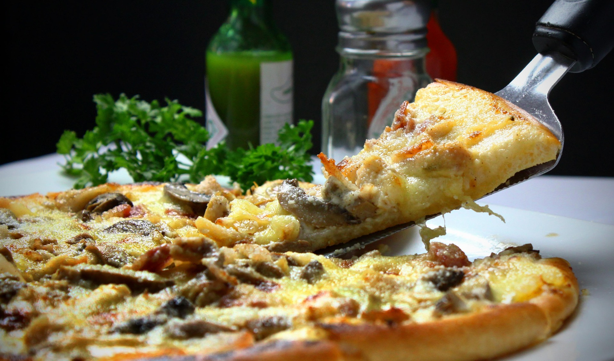

Home
Pizza

Pizza is an Italian dish consisting of a flat, usually round,
dough base topped with tomato sauce, mozzarella cheese,
and other toppings, then baked. It's a popular dish all over
the world, with numerous local variations in ingredients and styles.
Ingredients
-
Dough:
Made from flour, water, yeast, and salt, forming the base of the pizza.
-
Tomato Sauce:
A simple sauce made from crushed tomatoes, garlic, and herbs.
-
Cheese:
Mozzarella is the classic choice, but other cheeses can be used as well.
-
Toppings:
Common toppings include pepperoni, mushrooms, bell peppers, onions, and olives.
-
Herbs:
Fresh basil or oregano can be added for extra flavor.
-
Olive Oil:
A drizzle of olive oil before baking enhances the flavor and texture.
-
Seasoning:
Salt and pepper to taste, and sometimes a sprinkle of red pepper flakes.
How to Make Pizza Step-By-Step
-
Prepare the Dough:
Mix flour, water, yeast, and salt to form a dough. Knead until smooth and let it rise until doubled in size.
-
Preheat the Oven:
Preheat your oven to a high temperature (around 475°F or 245°C).
-
Shape the Dough:
Roll out the dough on a floured surface to your desired thickness.
-
Add Sauce:
Spread a thin layer of tomato sauce over the dough, leaving a small border around the edges.
-
Add Cheese:
Sprinkle mozzarella cheese evenly over the sauce.
-
Add Toppings:
Layer your choice of toppings over the cheese.
-
Bake:
Place the pizza in the preheated oven and bake for about 10-15 minutes, or until the crust is golden and the cheese is bubbly.
-
Finish:
Remove from the oven, drizzle with olive oil, and add fresh herbs if desired. Slice and serve hot.